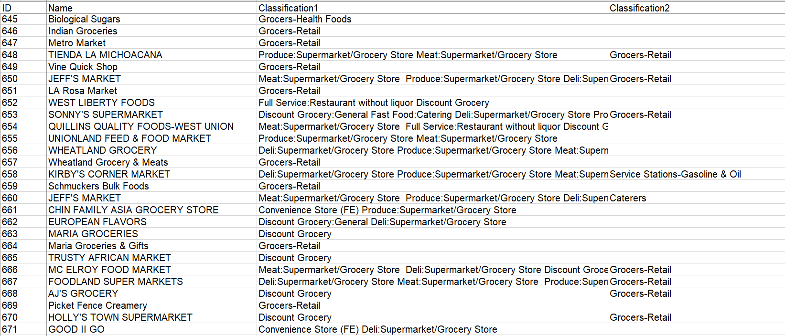
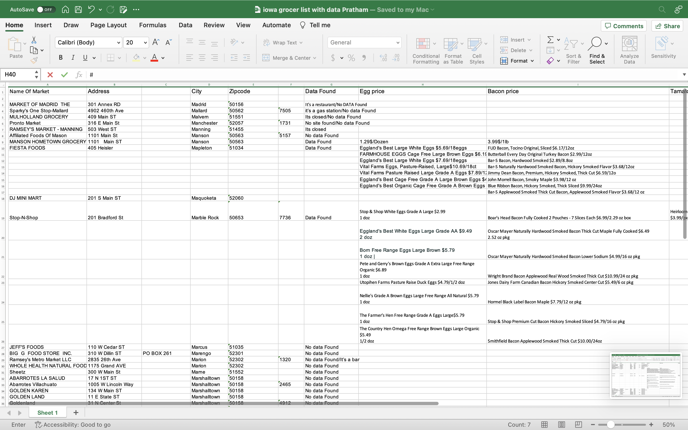
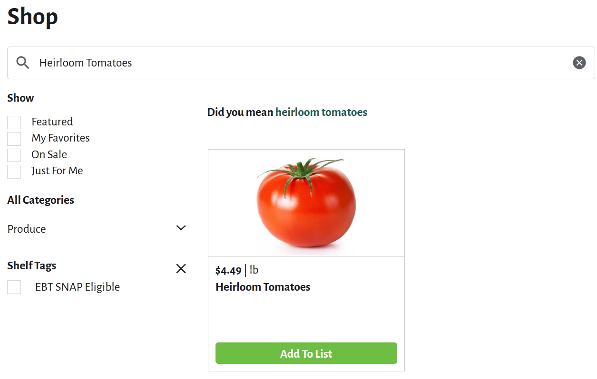
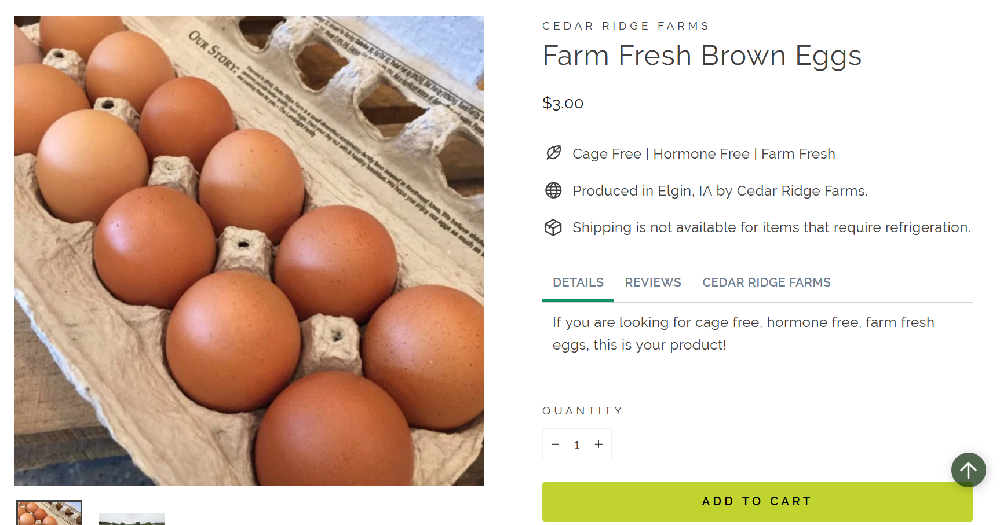
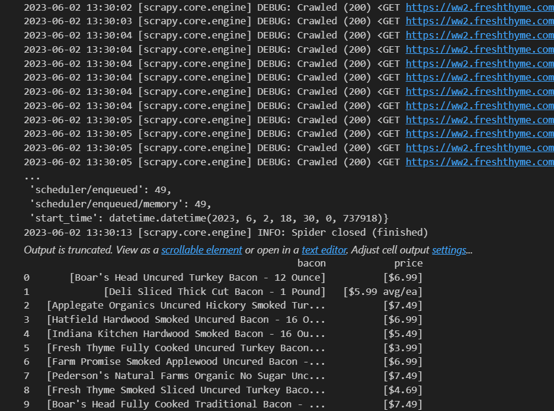

import pandas as pd
import scrapy
from scrapy.crawler import CrawlerProcess
from scrapy.utils.log import configure_logging
class FreshThymeBaconSpider(scrapy.Spider):
name = 'Fresh Thyme Market Bacon Spider'
def start_requests( self ):
start_urls = ['https://ww2.freshthyme.com/sm/planning/rsid/951/results?q=Bacon&take=48&f=Category%3AHot+Dogs%2C+Bacon+%26+Sausage']
for url in start_urls:
yield scrapy.Request( url = url, callback = self.cardsParse)
def cardsParse(self, response):
#Fail safe for links
try:
#grabs all cards from list and saves the link to follow
xpath = '//*[contains(@class,"Listing")]/div/a/@href'
listCards = response.xpath(xpath)
linklist.append(listCards.extract())
for url in listCards:
yield response.follow( url = url, callback = self.itemParse, meta={'link': url} )
except AttributeError:
pass
def itemParse(self, response):
#xpaths to the name and price
nameXpath = '//*[contains(@class, "PdpInfoTitle")]/text()'
priceXpath = '//*[contains(@class, "PdpMainPrice")]/text()'
url = response.meta.get('link')
#Grabs the name and price from the xpaths and adds them to the bacon list
bacon.append({'bacon': response.xpath(nameXpath).extract(), 'price': response.xpath(priceXpath).extract()})
# Start
configure_logging()
bacon = []
linklist = []
process = CrawlerProcess()
process.crawl(FreshThymeBaconSpider)
process.start()
process.stop()
baconFrame = pd.DataFrame(bacon)
print(baconFrame)Current Project Objectives
The currents project objectives for this week was to
Catch up on any additional training.
Collect and find data on heirloom tomatoes, eggs, and bacon.
Learning how to do web scraping in python through Datacamp.
Building programs to do web scraping
Works in Progress
An excel sheet that contains a list of small businesses of Iowa grocers that we had to go through and find places that had the data we wanted.


These are some examples of what we were looking for


Along with some manual data scraping. We started work on some data scraping programs (spiders). This code block is a spider that I recently created. However, there are still some improvements that still need to be made.
This image shows an example output of data we were able to scrape.

DSPG Questions
Are there stores or market places that would be helpful for us to look into?
Is anyone experienced in web scraping and if so there any advice that you have for us?